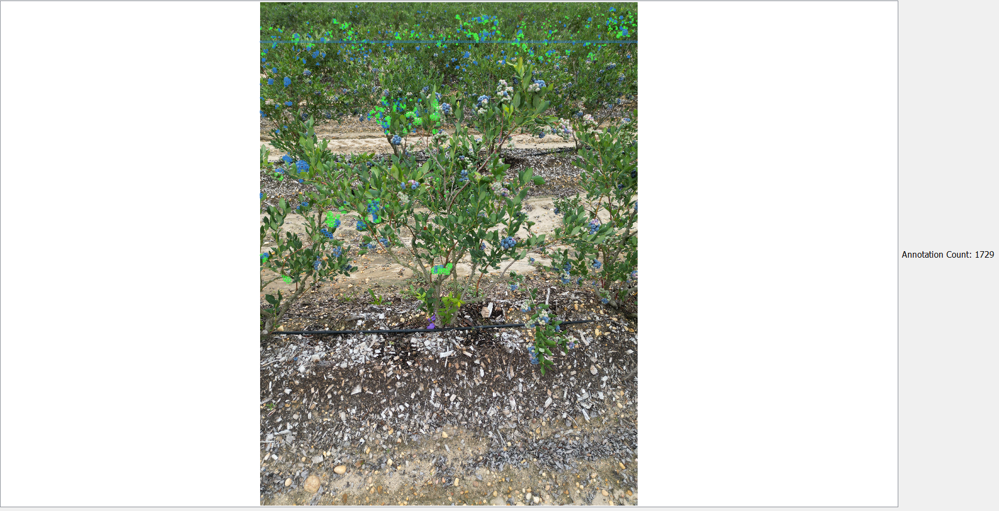
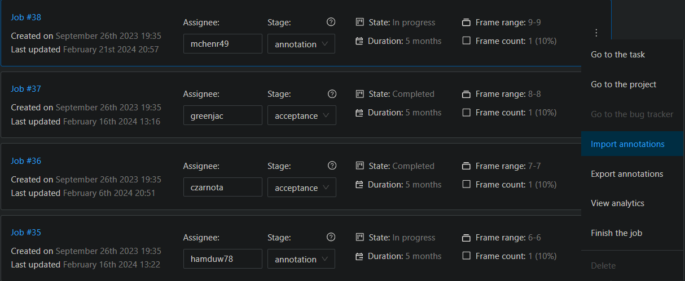

Rowan Annotator#
Exporting Dataset from CVAT#
Before we use the Rowan Annotator, you will need to export your data from CVAT in a specific way.
To load the annotation into the Rowan Annotator, you will need to export your data in the CVAT format.

Later, when we re-import our annotated data, we will need a YOLO formatted dataset as well.
The program will unzip these files, you do NOT need to unzip it yourself.
Importing a Dataset#
To import a dataset, click on the import button at the top-left.
This will open up your file explorer.
Navigate to where you exported your CVAT formatted dataset. And load the zip file.

This will then open up a pop-up to select a specific image (there could be more than one image loaded from the zip file).

Select whichever image you want, and hit confirm to open it.
Annotating#
Once your data is imported, it should display the image like this:

You will notice that there is an annotation count on the right-hand side. This will automatically update for each box you draw.

Tools#
On the left-hand side, there are an array of tools at your disposal. Let’s go over them one at a time.
Cursor Tool#

The cursor tool will allow you to LEFT-CLICK on individual annotations and move/adjust them. With only the cursor tool active, you cannot drag the image around or draw new boxes.

With a berry selected, you can also edit them with the RIGHT-CLICK. This will open a pop-up that lets you change the class, or delete the annotation.

Dragging Tool#

The drag tool will allow you to LEFT-CLICK on the image to move around. With only the drag tool active, you cannot edit any berries or draw new bounding boxes.
Drawing Tool#
The most important tool, the draw tool will allow you to create new annotations. The LEFT-CLICK functions as the dragging tool AND the cursor tool. Meanwhile, the RIGHT-CLICK functions as the drawing tool AND the cursor tool. This is done intentionally to make the annotation process more efficient.
When selecting the draw tool, a pop-up will appear to let you choose what kind of class you are drawing on the image.

With this tool selected, you can create annotations by holding down RIGHT-CLICK.
Exporting#
When you have finished your annotation, or if you just want to save your progress between sessions, you will need to export your annotations.

At the top-left, there is a button for exporting. Clicking this will open to your file explorer to save your annotations to a txt file in YOLO format.
Autosave#
NEW in v1.01: autosave! Because there’s no knowing when your power goes out, your PC crashes, or whatever might happen, autosaving your progress is the best way to keep your work from being deleted.
Clicking the Autosave button will open a pop-up menu to adjust the autosave time interval. By default, the autosave is turned off. To turn it on, adjust the interval to a value greater than 0.
Changing the autosave time interval will save the file at that instant if the new amount of time you set has passed. For example, if you had been annotating for 5 minutes already and you set the autosave interval to 2 minutes, it would instantly save because 5 minutes had passed before the most recent autosave (no recent one in this case), which is more than 2 minutes.
The autosave feature will create a folder named autosaves in the folder where your annotation program executable is.
The autosaves folder contains the exported annotations for the images you were working on in the YOLO annotation format. These exports are all named as <image_name>_<date>.txt.
Re-Importing onto CVAT#
If you remember when we exported from CVAT, we exported a YOLO formatted version of the dataset in addition to the CVAT formatted version.
Navigate to wherever you saved this version and unzip it.

Open the folder to see the contents of a YOLO formatted dataset.

Do not change any of the files at this level.
Open the obj_train_data folder to see our dataset’s files.
Replace the txt file for the image you annotated with the txt file you exported from the Rowan Annotator.
Zip the entire folder back up “Job_38_y.zip”. (This should replace the zip you previously had).
Go to CVAT, and import the new annotations for the job/task you are working on.

Select the annotation format as YOLO 1.1, and upload your new zip file.
Note: There may be errors that pop-up when uploading the file. Sometimes it shows an error while still successfully importing the data. To confirm if you imported your data, open your job in CVAT and confirm it manually.
Created by Luke Tonon Written by Brandon McHenry, 3/8/24